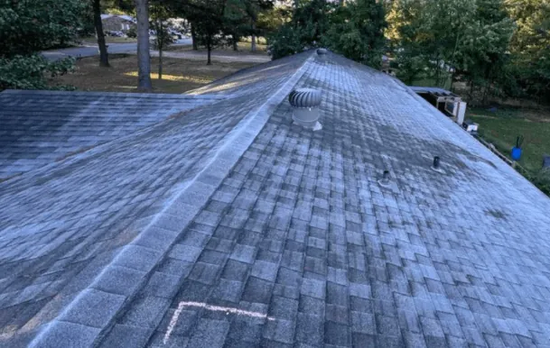
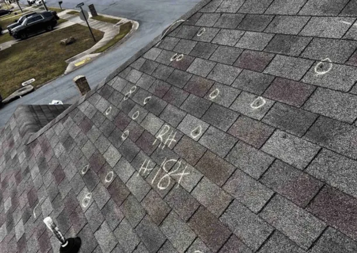

Putting off roof repairs may seem convenient but can lead to bigger, costlier issues. Addressing problems early helps maintain your roof’s integrity, prevents minor damage from escalating, and extends its lifespan—ultimately saving you money.
A well-maintained roof also boosts curb appeal and home value while providing peace of mind, especially during storms. Ignoring repairs can lead to leaks, structural damage, and even mold growth. Taking action now protects your home, health, and wallet in the long run.
The Financial Implications of Delaying Roof Repairs
Delaying roof repairs can lead to several hidden costs that quickly add up. Understanding these potential expenses can motivate homeowners to take prompt action. While it might seem economical to postpone repairs, the long-term financial impact can be substantial. The cost of emergency repairs, which are often more expensive due to their urgent nature, can far exceed the expense of routine maintenance.
Increased Repair Costs
Minor issues like a few damaged shingles can often be repaired quickly and inexpensively. However, if left unattended, these small problems can escalate into more extensive damage. Water can seep through compromised shingles, leading to rot, mold, and structural damage, which require more intensive—and expensive—repairs. The cost of replacing an entire section of the roof or even the whole roof is significantly higher than addressing minor issues promptly.
Energy Efficiency Losses
A well-maintained roof plays a critical role in your home’s energy efficiency. Damaged roofs can lead to drafts and poor insulation, causing your heating and cooling systems to work harder. This inefficiency results in higher utility bills, an avoidable expense with timely roof maintenance. The increased energy consumption not only affects your wallet but also has a negative impact on the environment.
Potential for Structural Damage
The longer roof repairs are delayed, the greater the risk of structural damage. Water infiltration can compromise the integrity of your home’s framework, leading to costly repairs that extend beyond the roof itself. This can include damage to walls, ceilings, and even the foundation. Such structural issues can pose serious safety risks and require extensive renovation efforts to rectify.
The Importance of Shingle Repair
Shingles serve as the first line of defense against the elements. When they are damaged or missing, your roof is vulnerable to leaks and further deterioration. Ensuring that shingles are in good condition is critical to maintaining the overall health of your roof. By addressing shingle issues as they arise, you can prevent water damage and extend the life of your roof.
Regular Maintenance and Inspection
Regular roof inspections by a roofing contractor can catch shingle issues early. This proactive maintenance ensures that any necessary shingle repairs are addressed before they lead to significant damage. Routine inspections can identify problems such as curled, cracked, or missing shingles, which can be repaired before they compromise the roof’s integrity.
Understanding Shingle Lifespan
Knowing the lifespan of your roofing materials helps plan repairs or replacements. Asphalt shingles, for example, typically last 20-30 years. Monitoring their condition allows for timely interventions, preventing unexpected failures. Understanding the expected lifespan of your shingles enables you to budget for replacements, reducing the financial burden of unforeseen repairs.
Additionally, regular inspections can help determine if your shingles are nearing the end of their useful life. This knowledge allows homeowners to plan for replacement, ensuring they are not caught off guard by sudden shingle failure.
Residential Roofing: Protecting Your Home

Residential roofing is essential to home maintenance, safeguarding your property against the elements. A well-maintained roof protects your home from rain, wind, snow, and sun, preventing damage and ensuring a comfortable living environment. By prioritizing roof care, homeowners can enhance their property’s resilience and value.
The Impact of Weather
Weather conditions can significantly affect the lifespan of your roof. Regular inspections help identify weather-related damage, allowing for prompt repairs before minor issues become major problems. Different climates pose unique challenges, such as heavy snowfall, high winds, or intense heat, each requiring specific roofing solutions to ensure durability.
Understanding how weather affects your roof can guide maintenance efforts and inform the selection of appropriate materials. By preparing for seasonal changes and addressing weather-induced damage promptly, homeowners can mitigate risks and protect their investments. Ensuring your roof is ready to withstand local weather conditions is a vital aspect of effective home maintenance.
Custom Solutions for Every Home
Every home is unique, and a qualified roofing company will offer tailored solutions that fit your specific needs, ensuring your roof remains in top condition. From material selection to design considerations, a customized approach ensures optimal performance and aesthetics. Professionals can assess your home’s specific requirements and recommend solutions that align with your goals and budget.
By opting for personalized roofing solutions, homeowners can address unique challenges and preferences, ensuring a roof that complements their home and lifestyle. Custom solutions also consider factors like energy efficiency, sustainability, and architectural style, enhancing your home’s overall appeal and functionality.
The Cost of Procrastination

Delaying roof repairs is a gamble that often leads to higher costs and more extensive damage. By addressing issues promptly, homeowners can save money in the long run and protect their investments. The hidden costs of procrastination extend beyond financial implications, affecting comfort, safety, and peace of mind.
The Role of Preventive Maintenance
Preventive maintenance is a cost-effective approach that catches potential issues before they escalate. Regular inspections and timely repairs are key components of a preventive maintenance strategy. By investing in routine care, homeowners can avoid the need for costly emergency repairs and extend the life of their roofs.
Preventive maintenance also fosters a proactive mindset, encouraging homeowners to stay informed about their roof’s condition and needs. This awareness allows for better planning and budgeting, reducing the stress and unpredictability of unexpected repairs. Adopting a preventive approach ensures a healthier, more resilient roof and a safer home environment.
Long-term Savings
Investing in your roof’s health today saves money and stress in the future. By maintaining your roof, you ensure its longevity and avoid the financial strain of unexpected repairs. The savings from reduced repair costs, energy efficiency improvements, and preserved property value can be substantial over time.
Act Now, Save Later
Procrastination in roof repairs can lead to a cascade of costly problems. By understanding the hidden costs of delaying repairs and taking prompt action, homeowners can protect their investments and ensure their homes remain safe and comfortable. Timely intervention is the key to avoiding the stress and expense of major repairs down the line.
Don’t wait for small issues to become costly repairs. Contact our team at EZ Roofing today to schedule a free roof inspection and take the first step toward safeguarding your home! By acting now, you can preserve your home’s integrity, enhance its value, and enjoy peace of mind for the future.